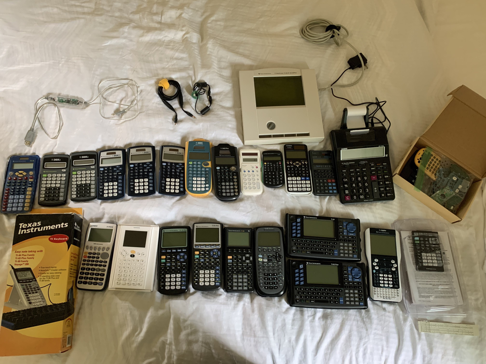

Andrew's Collection
(Last Updated: Sept 12, 2021)

Hi, I'm Andrew, the founder of MATHEMADNESS! As a calculator enthusiast, I naturally have a lot of units to show off. I'll go over the details below.
If you'd like to know more information about some of my graphing calculators, you can visit my TI-Planet profile.
Top Row: Accessories
- TI "Silverlink" - Graph-Link USB Cable
- 2x TI data cable
- TI ViewScreen (73, 80, 81, 82, 83 Plus)
Middle Row: Non-Graphers
- TI-15
- 2x TI-30Xa
- 3x TI-30XIIS
- TI-30XS Multiview (don't worry, it was purchased)
- TI-36X Pro
- Sharp Minuet
- Unknown Dollar Store Calculator #1
- Casio fx-991EX Classwiz
- Casio fx-280
- Casio HR-170RC
The Graveyard
- TI-30XS Multiview
- Unknown Dollar Store Calculator #2
Bottom Row: Graphers (and a keyboard)
- Casio fx-9750GII (with 9860GII firmware)
- Numworks N0110 (with box and all contents)
- TI-83 Plus
- TI-83 Plus Silver Edition (ViewScreen, broken)
- TI-85
- TI-89 Titanium
- TI-92
- TI-92 Plus
- TI-Nspire with Touchpad (somewhat incomplete box)
- ...and a Sterling Slide Rule for good measure